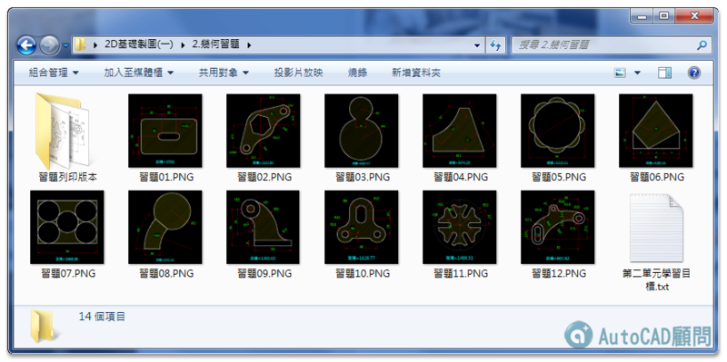
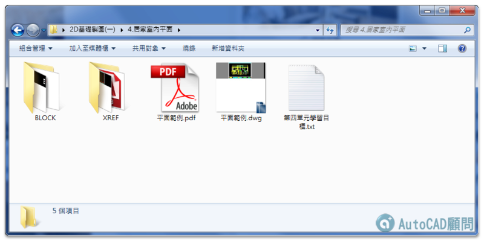

★注意：線上課程影片頻道綁定「GMAIL信箱」，透過電腦線上觀看影片時，必需要「登入GOOGLE帳戶」！
★加入線上課程 👉 https://autocad-tw.1shop.tw/fwmimx 👈
版本：AutoCAD 2016
影片：中文影音教學
規格：共計4單元（課程430分鐘）
註：附有DWG範例供操作練習，還有相關教學文件筆記。點擊影片網址，在影片下方可見DWG範例下載網址。
☆教授軟體為AutoCAD 2016版本，使用2009至2023版本也可以（介面一樣），因為基礎指令都是通用的，從繪製、尺寸標註及出圖列印都有教學，所以學習上不會有問題，這點請大家放心，參與練習過程中有任何疑慮，請回論壇主題中發表文章討論，讓你學習無後顧之憂！
＝＝＝＝＝＝＝＝＝＝＝＝＝＝＝＝＝＝＝＝＝＝＝＝＝＝＝＝＝＝＝＝＝＝＝
目標一 >> 可讓使用者學會製作繪製工程中必要的圖框。
目標二 >> 只要用QNEW指令打開新圖，就會擁有已插入好「外部參考圖框」標準樣版檔。
1.範例設計使用A1圖框(圖紙大小=841mm X 594mm)
使用者可以依照您的公司標準製作圖框(如A3圖紙或A4圖紙)。
2.新建「樣版檔」(DWT)，再插入「外部參考」XREF方式連結A1圖框
參考路徑使用「相對路徑」，最後透過「選項」設定 QNEW指令。
目標一 >> 練習基礎繪圖及修改指令，了解操作順序步驟原理。
目標二 >> 學習進階小技巧，如物件鎖點追蹤(F11)及TK追蹤，可省去繪製輔助線步驟。
1.各範例幾何習題繪製，標註尺寸及查詢面積。
2.插入幾何習題外部參考，並完成套圖框作品。
目標一 >> 加強指令工具使用，雙手並用練習繪圖效率最佳。
目標二 >> 實務範例拆解，從已知的尺寸及工具著手進行。
1.插入圖框完成比例設置決定圖面比例。
2.依照圖面比例設置標註整體比例及線型整體比例。
目標一 >> 強化職場實務圖框(圖紙)、圖面單位及圖面比例決定。
目標二 >> 實務尺寸標註、插入傢俱配置及地坪填充線應用。
1.完成配置空間出圖頁面設置，制定視埠比例及視埠圖層控制。
2.新增客製化出圖筆寬(CTB)，以及批次完成發佈圖面。
＝＝＝＝＝＝＝＝＝＝＝＝＝＝＝＝＝＝＝＝＝＝＝＝＝＝＝＝＝＝＝＝＝＝＝
註1：附有DWG範例供操作練習，還有相關教學文件筆記。
註2：如遇播放問題，可改用「彈出式視窗」全螢幕觀看影片。

👇Google雲端觀看課程
https://drive.google.com/drive/folders/1RybVm552YnSIya339gZDGCH6NpXprYeR?usp=sharing

第一單元.圖框製作

第二單元.幾何習題

第三單元.實務繪製

第四單元.居家室內平面

https://www.autocad-tw.com/f72-forum
https://www.autocad-tw.com/t23024-topic
https://www.autocad-tw.com/t22774-topic